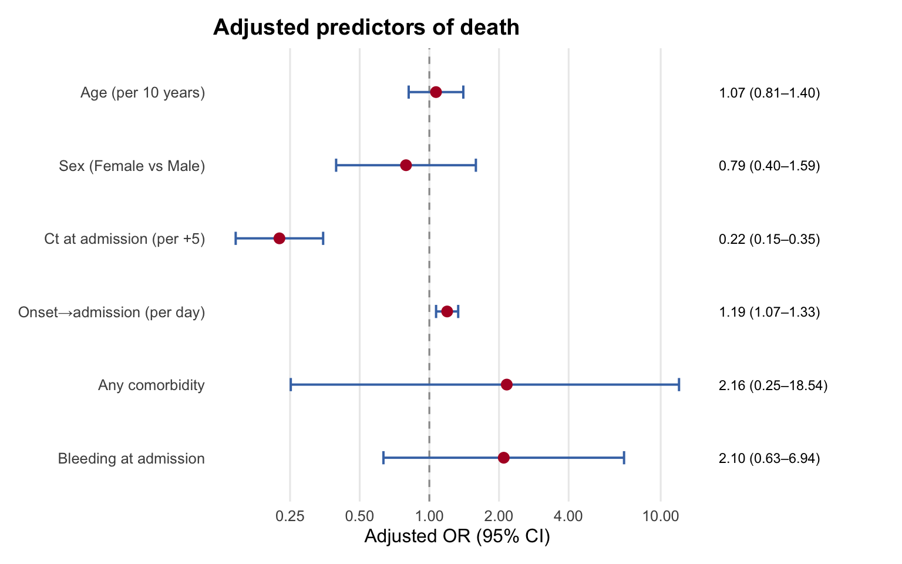
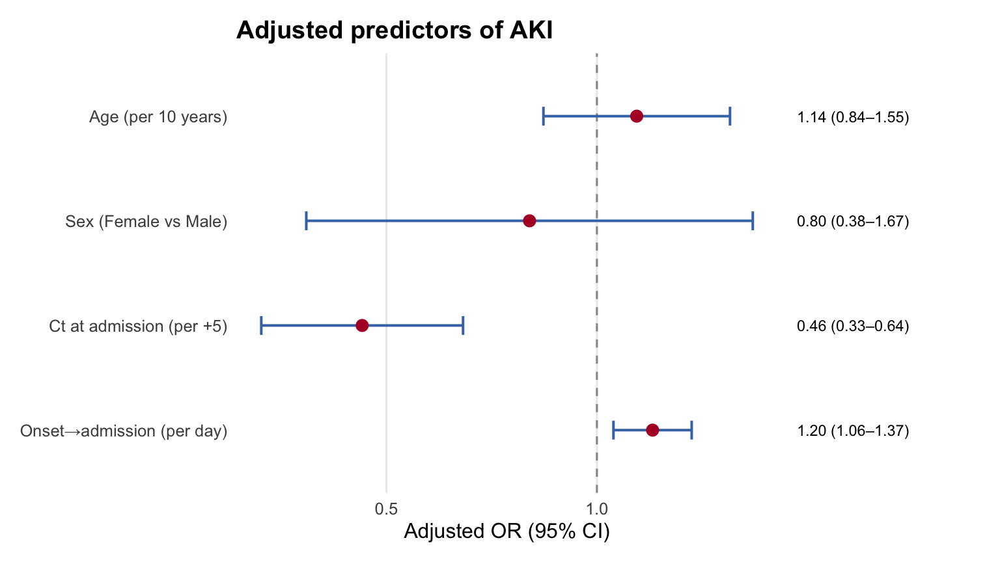
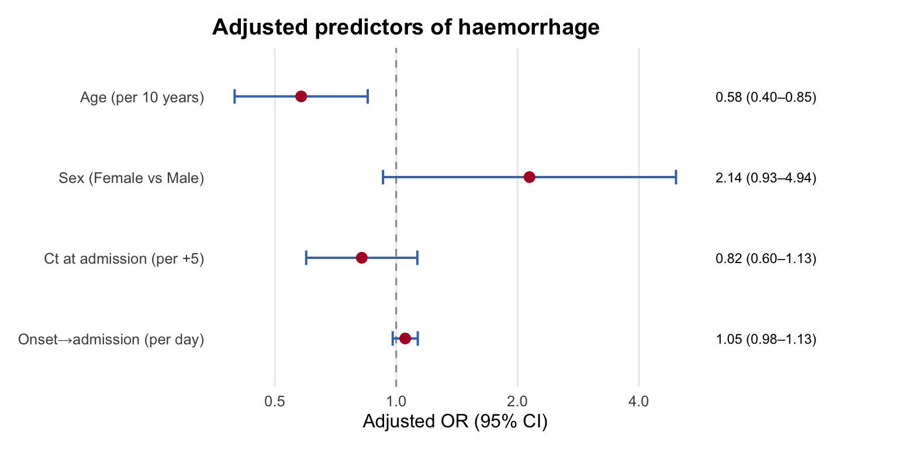
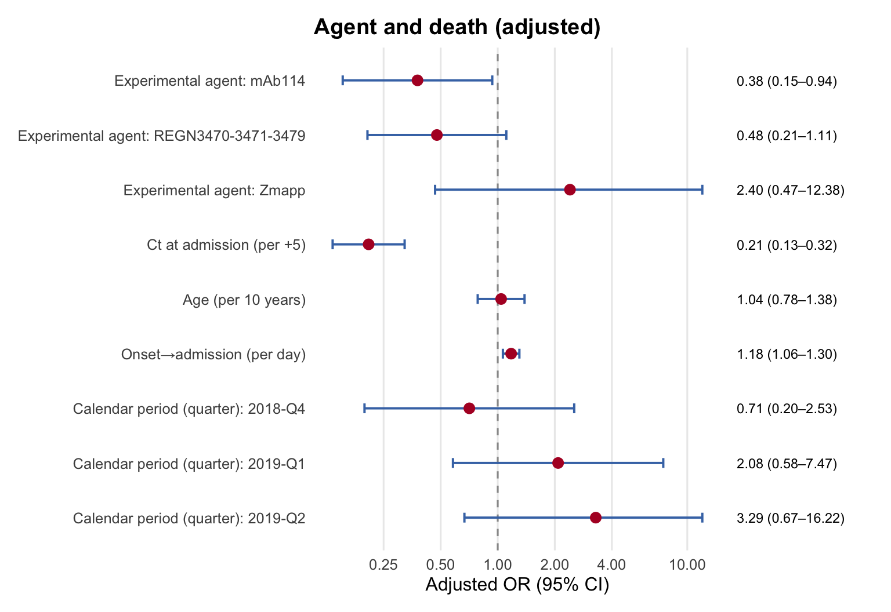

| Characteristic |
Univariable
|
Adjusted (OR)
|
Adjusted (Risk)
|
||||||
|---|---|---|---|---|---|---|---|---|---|
| Univariable OR | 95% CI | p-value | Adjusted OR | 95% CI | p-value | Adjusted RR | 95% CI | p-value | |
| Age (per 10 years) | 1.04 | 0.84 to 1.27 | 0.73 | 1.07 | 0.81 to 1.40 | 0.63 | 1.05 | 0.95 to 1.17 | 0.36 |
| Sex (Female vs Male) | |||||||||
| Male | — | — | — | — | — | — | |||
| Female | 0.95 | 0.55 to 1.62 | 0.84 | 0.79 | 0.40 to 1.59 | 0.51 | 0.84 | 0.64 to 1.10 | 0.21 |
| Ct at admission (per +5) | 0.23 | 0.15 to 0.35 | <0.001 | 0.22 | 0.15 to 0.35 | <0.001 | 0.45 | 0.37 to 0.55 | <0.001 |
| Onset→admission (per day) | 1.15 | 1.05 to 1.25 | 0.001 | 1.19 | 1.07 to 1.33 | 0.002 | 1.05 | 1.02 to 1.08 | <0.001 |
| Any comorbidity | |||||||||
| No | — | — | — | — | — | — | |||
| Yes | 2.84 | 0.52 to 15.4 | 0.23 | 2.16 | 0.25 to 18.5 | 0.48 | 1.40 | 0.84 to 2.33 | 0.19 |
| Bleeding at admission | |||||||||
| No | — | — | — | — | — | — | |||
| Yes | 3.15 | 1.28 to 7.76 | 0.012 | 2.10 | 0.63 to 6.94 | 0.23 | 1.38 | 1.09 to 1.74 | 0.007 |
| Abbreviations: CI = Confidence Interval, IRR = Incidence Rate Ratio, OR = Odds Ratio | |||||||||
EVD North Kivu 2018–2019 — Predictors of Outcome & Complications
Methods
Associations with in-hospital death (recovered vs died), acute kidney injury (admission creatinine-based renal impairment, >1.1 mg/dL at any time) and haemorrhage (any bleeding sign/site at admission) were assessed with pre-specified, DAG-informed models rather than data-driven selection, so the reported effect estimates carry valid confidence intervals.
Adjusted odds ratios come from Firth-penalised logistic regression (robust to sparse cells and separation); adjusted risk ratios from modified Poisson regression with robust standard errors. Univariable odds ratios are shown alongside. Continuous predictors are per interpretable unit (age per 10 years, Ct per +5, delay per day).
Models are complete-case. Each caption reports the analytic N (patients with complete data on every variable in that model) and the events (patients with the outcome) — e.g. “N = 259, events = 104” for death means 259 of the 408 with a known outcome had complete predictors and 104 of those died; the shortfall is mostly missing Ct. Both matter because a model needs roughly 10 events per predictor to stay stable, which is why Firth is used for the sparser outcomes.
Warning
Agents (ZMapp, REGN-EB3, mAb114, remdesivir) were given under MEURI — clinician-selected by a pre-specified algorithm, not randomised. In these data that selection is visible: admission viral load differs by agent (median Ct 23.5 for REGN-EB3 to 26.8 for mAb114) and agent use shifts over the outbreak. So the agent–outcome analysis is adjusted for Ct, age, delay and calendar period and read as association, not efficacy; it is a secondary analysis. The primary mortality model uses baseline predictors only. Admission→treatment was fast (median 1 day).
Predictors of death

Predictors of acute kidney injury
| Characteristic |
Univariable
|
Adjusted (OR)
|
Adjusted (Risk)
|
||||||
|---|---|---|---|---|---|---|---|---|---|
| Univariable OR | 95% CI | p-value | Adjusted OR | 95% CI | p-value | Adjusted RR | 95% CI | p-value | |
| Age (per 10 years) | 1.10 | 0.85 to 1.44 | 0.47 | 1.14 | 0.84 to 1.55 | 0.40 | 1.06 | 0.95 to 1.18 | 0.29 |
| Sex (Female vs Male) | |||||||||
| Male | — | — | — | — | — | — | |||
| Female | 0.81 | 0.43 to 1.54 | 0.52 | 0.80 | 0.38 to 1.67 | 0.55 | 0.88 | 0.68 to 1.14 | 0.34 |
| Ct at admission (per +5) | 0.46 | 0.34 to 0.64 | <0.001 | 0.46 | 0.33 to 0.64 | <0.001 | 0.71 | 0.61 to 0.82 | <0.001 |
| Onset→admission (per day) | 1.21 | 1.07 to 1.37 | 0.002 | 1.20 | 1.06 to 1.37 | 0.005 | 1.04 | 1.01 to 1.06 | <0.001 |
| Abbreviations: CI = Confidence Interval, IRR = Incidence Rate Ratio, OR = Odds Ratio | |||||||||

Predictors of haemorrhage
| Characteristic |
Univariable
|
Adjusted (OR)
|
Adjusted (Risk)
|
||||||
|---|---|---|---|---|---|---|---|---|---|
| Univariable OR | 95% CI | p-value | Adjusted OR | 95% CI | p-value | Adjusted RR | 95% CI | p-value | |
| Age (per 10 years) | 0.57 | 0.39 to 0.84 | 0.005 | 0.58 | 0.40 to 0.85 | 0.005 | 0.61 | 0.43 to 0.85 | 0.003 |
| Sex (Female vs Male) | |||||||||
| Male | — | — | — | — | — | — | |||
| Female | 2.36 | 1.03 to 5.41 | 0.042 | 2.14 | 0.93 to 4.94 | 0.074 | 2.01 | 0.93 to 4.34 | 0.076 |
| Ct at admission (per +5) | 0.79 | 0.57 to 1.09 | 0.14 | 0.82 | 0.60 to 1.13 | 0.22 | 0.83 | 0.61 to 1.14 | 0.25 |
| Onset→admission (per day) | 1.06 | 0.99 to 1.14 | 0.092 | 1.05 | 0.98 to 1.13 | 0.16 | 1.04 | 0.99 to 1.08 | 0.090 |
| Abbreviations: CI = Confidence Interval, IRR = Incidence Rate Ratio, OR = Odds Ratio | |||||||||

Treatment agent and death (MEURI — adjusted, non-randomised)
Agent received and death, adjusted for admission Ct, age, delay and calendar period (reference = remdesivir, the largest group), among treated patients with a recorded agent. Adjusted association within this cohort, not comparative efficacy.
| Characteristic |
Univariable
|
Adjusted (OR)
|
Adjusted (Risk)
|
||||||
|---|---|---|---|---|---|---|---|---|---|
| Univariable OR | 95% CI | p-value | Adjusted OR | 95% CI | p-value | Adjusted RR | 95% CI | p-value | |
| Experimental agent | |||||||||
| Remdesivir (GS-5734) | — | — | — | — | — | — | |||
| mAb114 | 0.50 | 0.25 to 0.98 | 0.045 | 0.38 | 0.15 to 0.94 | 0.035 | 0.68 | 0.49 to 0.96 | 0.029 |
| REGN3470-3471-3479 | 0.50 | 0.27 to 0.94 | 0.031 | 0.48 | 0.21 to 1.11 | 0.086 | 0.77 | 0.57 to 1.05 | 0.095 |
| Zmapp | 1.62 | 0.49 to 5.37 | 0.43 | 2.40 | 0.47 to 12.4 | 0.29 | 1.35 | 0.88 to 2.05 | 0.17 |
| Ct at admission (per +5) | 0.28 | 0.19 to 0.39 | <0.001 | 0.21 | 0.13 to 0.32 | <0.001 | 0.46 | 0.38 to 0.56 | <0.001 |
| Age (per 10 years) | 1.03 | 0.84 to 1.26 | 0.79 | 1.04 | 0.78 to 1.38 | 0.78 | 1.02 | 0.91 to 1.14 | 0.77 |
| Onset→admission (per day) | 1.11 | 1.04 to 1.20 | 0.003 | 1.18 | 1.06 to 1.30 | 0.001 | 1.05 | 1.02 to 1.08 | <0.001 |
| Calendar period (quarter) | |||||||||
| 2018-Q3 | — | — | — | — | — | — | |||
| 2018-Q4 | 0.46 | 0.17 to 1.27 | 0.13 | 0.71 | 0.20 to 2.53 | 0.60 | 0.75 | 0.47 to 1.20 | 0.23 |
| 2019-Q1 | 0.75 | 0.27 to 2.06 | 0.58 | 2.08 | 0.58 to 7.47 | 0.26 | 1.14 | 0.71 to 1.82 | 0.58 |
| 2019-Q2 | 1.00 | 0.29 to 3.39 | >0.99 | 3.29 | 0.67 to 16.2 | 0.14 | 1.41 | 0.88 to 2.27 | 0.15 |
| Other/rare | 0.00 | 0.00 to 0.00 | <0.001 | 0.00 | 0.00 to 0.00 | <0.001 | 0.00 | 0.00 to 0.00 | <0.001 |
| Abbreviations: CI = Confidence Interval, IRR = Incidence Rate Ratio, OR = Odds Ratio | |||||||||

| Crude case-fatality by agent | |||
|---|---|---|---|
| Agent | N | Deaths | CFR |
| Remdesivir (GS-5734) | 109 | 55 | 50.5% |
| mAb114 | 91 | 22 | 24.2% |
| REGN3470-3471-3479 | 110 | 32 | 29.1% |
| Zmapp | 18 | 9 | 50.0% |
Unadjusted case-fatality was lowest for REGN-EB3 and mAb114; after adjusting for admission viral load (REGN-EB3 patients had the highest load), the estimates above are the more informative view.
Sensitivity: LASSO selection (death)
As a cross-check, LASSO lets the data select predictors. It is a robustness check only — p-values and confidence intervals stay with the pre-specified model.
LASSO (λ.min, 10-fold cross-validation) retained: ct5, delay.
| Characteristic | Adjusted OR | 95% CI | p-value |
|---|---|---|---|
| Ct at admission (per +5) | 0.25 | 0.17 to 0.36 | <0.001 |
| Onset→admission (per day) | 1.17 | 1.06 to 1.28 | 0.001 |
| Abbreviations: CI = Confidence Interval, OR = Odds Ratio | |||
Rendered 2026-07-04 07:03:12 | subgroup: adults